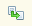

Поиск забракованных серий
Обработка Поиск забракованных серий предназначена для автоматического поиска серий лекарственных препаратов в учетной системе, изъятых из обращения лекарственных средств в соответствии с решениями Росздравнадзора. Обработка позволяет автоматически найти серии из справочника Серии номенклатуры, соответствующие элементу справочника Забракованные серии.
Серии из справочника Серии номенклатуры попадают в список, подлежащих дальнейшему рассмотрению (кандидаты на забраковку):
Форма обработки состоит из двух частей: слева выводится список серий из справочника Серии номенклатуры, справа - список серий из справочника Забракованные серии. При полном совпадении серийных номеров элементов этих справочников в списке серий номенклатуры из учетных данных появляется соответствующая пиктограмма ( ). Для отбора списка серий из справочника Серии номенклатуры, серийный номер которых полностью совпал со списком серийных номеров из справочника Забракованные серии необходимо воспользоваться кнопкой с идентичной пиктограммой на панели левой таблицы.
). Для отбора списка серий из справочника Серии номенклатуры, серийный номер которых полностью совпал со списком серийных номеров из справочника Забракованные серии необходимо воспользоваться кнопкой с идентичной пиктограммой на панели левой таблицы.
Для подтверждения факта забраковки серии в учетной системе необходимо установить признак Серия номенклатуры забракована в правом списке забракованных серий, при этом в левом списке необходимо спозиционироваться на соответствующую серию. Также этот признак можно установить в форме элемента справочника Серии номенклатуры с помощью кнопки Забраковать.
После записи сведений о забраковке серии она будет выделена красным цветом в списках выбора, а также в форме элемента соответствующей серии номенклатуры появится пиктограмма ().
Если необходимо снять признак Серия номенклатуры забракована, то это можно сделать путем снятия этого признака в правой таблице или в форме элемента справочника Серии номенклатуры через меню Еще - Отменить забраковку.
Если в правом списке забракованных серий строка обозначена бледно-серым цветом, это означает, что серия лекарственного препарата, ранее изъятая из обращения, разрешена к дальнейшей реализации.
Если при автоматическом сопоставлении серийных номеров не найдено полного соответствия между забракованной серией Росздравнадзора и серией в учетной системе, то это соответствие можно установить вручную с помощью кнопки Добавить в правой таблице окна. При нажатии этой кнопки появляется форма выбора забракованной серии, в которой можно регулировать строку для поиска вхождения этой строки в серийный номер или наименование препарата из списка забракованных серий.
Обработка находится в разделе Управление аптекой - Сервис.
Обработку можно вызвать из списка справочника Забракованные серии по кнопке Обработать выделенные строки - Поиск забракованных серий.
В этом случае обработка вызывается для выделенных строк справочника, и форма обработки выглядит зеркально отраженной: справа выводится список серий из справочника Серии номенклатуры, слева - список серий из справочника Забракованные серии.
Работа в этом случае производится с правой таблицей серий номенклатуры, т.е. к забракованной серии привязывается набор серий номенклатуры.
В остальном данный режим ничем не отличается от указанного выше.
Переключение между режимами работа от серии номенклатуры и работа от забракованной серии Росздравнадзора возможно помощью кнопки Перейти к поиску по приказам Росздравнадзора и Перейти к поиску по сериям номенклатуры, обозначенной пиктограммой .